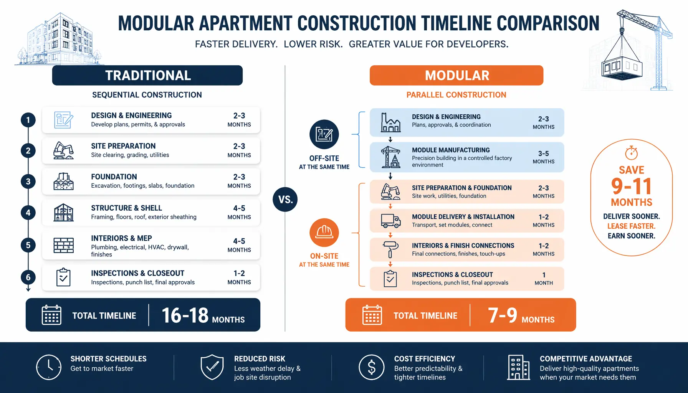

If you develop apartment buildings for a living, you know the math: every month your project is under construction is a month of deferred rent, carried interest on your construction loan, and risk exposure to material price swings and labor shortages. The project that takes 18 months and goes 15% over budget is not an edge case — it's the norm in conventional multi-family construction.
Modular construction changes that math. Over the past decade, a growing number of multi-family developers have switched to modular not because it's trendy, but because the numbers consistently work in their favor. This guide walks through the developer's perspective — cost, timeline, quality, design, and what to look for when evaluating a modular partner for your next apartment project.

Why Apartments Are a Natural Fit for Modular
Modular construction works best when a building has repeating unit types. Apartments are, by definition, compositions of repeating units — a one-bedroom layout repeats across multiple floors, kitchens and bathrooms share consistent dimensions, and MEP runs follow predictable paths. That repetition is exactly what makes modular efficient.
Our factories produce apartment modules on assembly lines. Each workstation performs a specific task — steel framing, insulation, electrical rough-in, drywall, flooring, cabinetry installation — with laser-guided precision. The same team builds the same components every day, which means speed improves and defects drop over the course of production. It's the opposite of a construction site, where every crew is working in a slightly different environment with different conditions.
MODURA's apartment solutions range from 20 to 200 units per project, with module configurations that support studio, one-bedroom, two-bedroom, and three-bedroom layouts within a single building. Our four factories across North America, Europe, and Southeast Asia have produced over 12,000 modules since 2009, with a combined annual capacity of 4,000 modules.
The Financial Case for Modular Apartments
Let's get specific about where modular delivers financial advantage for apartment developers. The headline numbers — 50% faster delivery and 15–20% lower total project cost — are real, but the breakdown matters for underwriting a project.
Timeline Compression = Earlier Rent Roll
A conventional 100-unit apartment building, from groundbreaking to certificate of occupancy, runs 16 to 18 months. A modular equivalent — same unit count, similar finish quality — runs 7 to 9 months. The difference comes from parallel workflows: the factory builds modules while the site crew pours foundation and runs utilities. On a typical conventional project, those steps happen sequentially.
Consider the revenue impact. A 100-unit building at-market rents (say $1,800/month average for a mix of one- and two-bedroom units) generates approximately $2.16M in annual gross rent. Opening 9 months earlier adds roughly $1.6M in accelerated rental income. That's not "potential upside" — it's revenue that starts flowing sooner, improving the project's stabilized NOI and exit cap rate.
Hard Cost Comparison
The manufacturing cost of modular apartments is typically within 0–5% of the on-site construction cost of an equivalent conventionally framed building. That gap is shrinking as factory automation improves and on-site labor costs rise — in some markets, modular is already cheaper on a pure hard-cost basis. But the real savings aren't in the hard costs; they're in the soft costs and avoided risk.
Our data across 500+ projects shows modular apartments deliver:
- 12–18% lower total project cost when factoring in financing, general conditions, and change order avoidance
- <5% change order rate vs. 15–20% industry average for conventional construction
- 92% of projects deliver within 5% of original budget
- Average construction loan interest savings of $500K–$800K on a $20M project
For developers working with fixed-price construction contracts or LIHTC (Low-Income Housing Tax Credit) allocations with strict deadline requirements, that predictability is as valuable as the absolute savings.
Lower Carrying Costs
Construction loans typically carry interest rates 200–400 basis points above prime. On a $15M loan for an apartment project, that's roughly $900K–$1.2M in annual interest. Reducing the construction period from 18 months to 8 months cuts carrying costs by over half — roughly $500K in savings on a typical project. That alone often covers any premium in modular manufacturing costs. For detailed project financing strategies, see our construction financing guide.
Design Flexibility: Apartments That Don't Look Modular
There's a persistent perception that modular apartments are limited to boxy, uniform designs that are easy to spot. That hasn't been true for years. Our apartment buildings include a range of architectural options that make modular indistinguishable from site-built construction.
Floor Plans That Work
Modules are sized around transport constraints — typically 12–14 feet wide and up to 60 feet long — but that doesn't constrain the apartment layout. A typical two-bedroom unit uses two side-by-side modules with a corridor joint that's finished on-site. Studios and one-bedrooms fit within a single module. Open-plan living areas can span across module boundaries with structural headers that maintain clear-span space. The result is floor plans that tenants would never identify as modular.
Building Envelope and Finishes
Our buildings support multiple cladding options — metal panel systems, brick veneer, fiber cement board, stucco, and composite panel. Windows are factory-installed and sealed under controlled conditions, eliminating the weather-dependent quality issues of on-site window installation. Roofs can be flat, pitched, or green-roof assemblies. Balconies, canopies, and architectural features are added on-site after module placement, creating the visual depth that distinguishes a building's appearance.
See the full design-to-delivery process for a detailed breakdown of how MODURA engineers apartment buildings from concept through handover.
Quality That Tenants Notice and Operators Appreciate
Apartment operators care deeply about two things: resident satisfaction and maintenance costs. Modular construction improves both.
Sound Isolation Between Units
Noise complaints are the single most common source of resident dissatisfaction in apartment buildings. Our modules achieve STC 55 (Sound Transmission Class) between units — exceeding the IBC requirement of STC 50 by a significant margin. The improvement comes from consistent construction: every party wall is built exactly to spec, every insulation batt is installed correctly, and every penetration is sealed. On a traditional site, STC performance varies from unit to unit depending on the crew and conditions that day. In our factory, every unit meets the same standard. For a complete technical breakdown, see our acoustic performance and soundproofing guide.
Bathroom and Kitchen Quality
Bathrooms and kitchens are the two most defect-prone areas in apartment construction — waterproofing failures, tile alignment issues, cabinet door adjustments, plumbing leaks. In our factory, every bathroom is built on a precision jig with tile alignment to ±1mm, pressure-tested for 24 hours, and inspected at six workstations before the module leaves the factory. The result: post-occupancy warranty claims on plumbing and finishes are 60% lower than industry averages for conventional construction.
Energy Performance
Factory-built envelopes are inherently tighter than site-built equivalents. Our modular apartments test at 0.15 ACH50 (air changes per hour at 50 Pascals) — well below the 0.40 ACH50 Passive House threshold and roughly 60% tighter than typical code-built apartments. That translates to lower utility costs for residents and building owners, and it contributes to LEED certification paths. Our standard apartment specifications exceed IECC 2024 requirements by 25%. Learn more in our energy efficiency guide for modular buildings.

Real Project: 120-Unit Workforce Housing, Denver CO
In early 2026, we completed a 120-unit workforce housing development in Denver, Colorado — a market where rising construction costs have made affordable housing development increasingly challenging.
- Unit mix: 48 studio, 48 one-bedroom, 24 two-bedroom
- Building type: 5-story wood-over-modular podium
- Conventional estimate: 20 months, $28.5M
- Modular actual: 9 months, $24.2M
- Time saved: 11 months (55% reduction)
- Cost saved: $4.3M (15% reduction)
- Punch-list items at handover: 31 (industry average for comparable conventional project: 170+)
- LEED certification: Gold (62 points — construction waste management and indoor environmental quality were key contributors)
The developer's project manager noted: "The schedule certainty was what sold us. With LIHTC deadlines, we couldn't afford a 6-month delay. Modular gave us a guaranteed delivery date, and they hit it."
What to Ask Before Committing to Modular for Your Apartment Project
Modular isn't the right answer for every apartment development. Here are the questions that separate good candidates from bad ones:
- What's your unit count? — Modular is most economical at 40+ units. Below that, the factory setup costs and transport logistics don't scale efficiently. Above 100 units, modular delivers maximum advantage through production repetition.
- What's the site access like? — Modules arrive on flatbed trucks (typically 14'×60' max). The site needs room for truck staging and crane placement. Urban infill sites can work, but a logistics plan needs to be developed early.
- What's your timeline driver? — If you're working with tax credit deadlines, a lease-up target, or a fixed delivery date for institutional investors, modular's schedule certainty is a major de-risking factor.
- What's your unit mix? — Projects with high repeatability (fewer plan types, more units per plan) benefit most. But even mixed-unit buildings work efficiently — we've delivered buildings with 8 different floor plans in a single project.
- What's the local code position? — Most jurisdictions in North America have adopted the IBC with modular provisions. Our modules are third-party inspected and certified to IBC requirements, which simplifies local permitting. For a complete budget breakdown by building type, see our construction cost per square foot guide.
The Bottom Line
Modular apartment construction has moved past the pilot-project stage. With over 500 projects delivered across 18 countries, the data is clear: modular delivers apartments 50% faster with 15–20% lower total cost, better quality metrics, and energy performance that exceeds code requirements. For multi-family developers facing compressed timelines, rising material costs, and persistent labor shortages, it's worth a serious look.
The key is finding a modular partner with production capacity, delivery track record, and the engineering capability to adapt to your specific project requirements — not a one-size-fits-all product.
Contact our team for a preliminary feasibility assessment. We'll provide a concept design, timeline comparison, and budget estimate tailored to your property within two weeks.